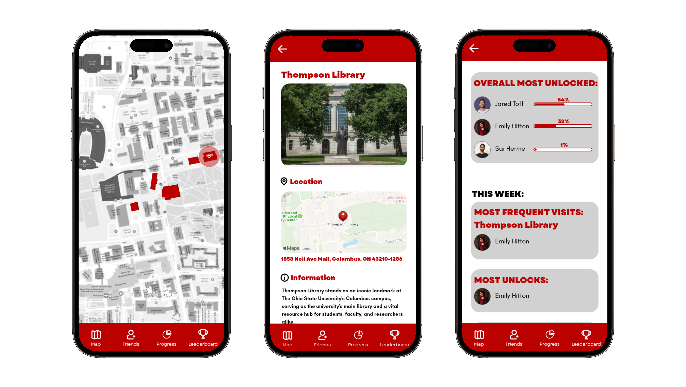
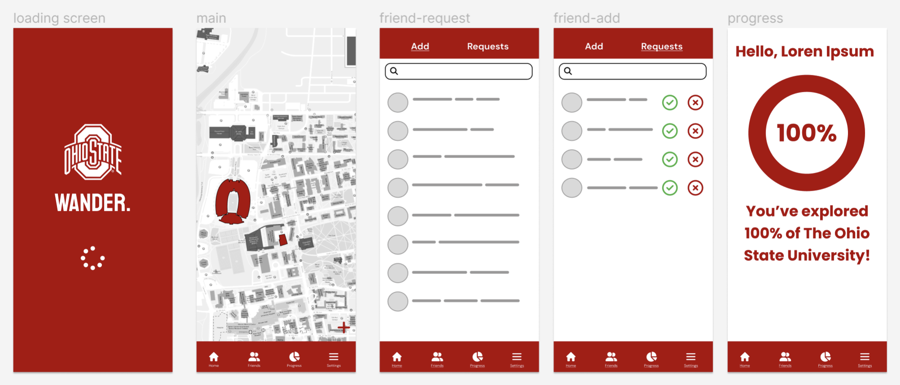

A campus exploration app for The Ohio State University.

Project Type
Case Study
Roles
UX Designer: Justin Tran
Tools
Adobe XD
Duration
April 2024
Problem
Students are not aware of or are not exploring campus buildings and resources that The Ohio State University has to offer.
Solution
An app that utilizes the users’ location to display the progress of which buildings they have been to and enable students to join groups to promote campus-wide or private competition.
By making the exploration experience a game, the app aims to increase students' engagement with campus facilities and to inspire competition.
The Process
I began by defining the features I wanted for the app. I knew I wanted a scrollable map, a friends page, a progress tracker.
Then, I created digital wireframes of all the screens. I made sure to maintain the brand guidelines of the university.

After this, I created a high fidelity wireframe. In this new version, I swapped out the settings page for a leaderboard to further promote competition and to retain a constant user base.
I realized that sometimes you must be confident with your decisions. For example, I had visualized a circle progress bar for the progress screen, but ended up switching it a story progress report.
Similarly, adding the leaderboard made the app have more functionalities and depth.
Next time, I want to preform usability testing as this project had a deadline.